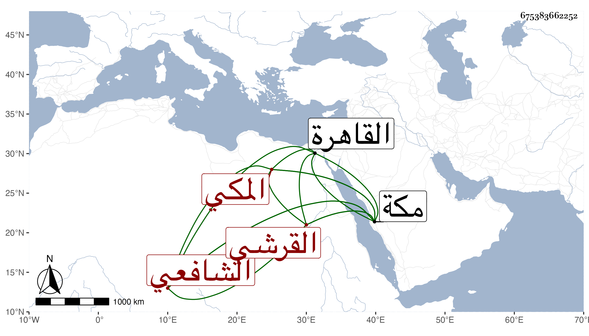

0902Sakhawi.DawLamic.ITO20230111-ara1.EIS1600.675383662252
Biography ID: 675383662252
91
محمد بن أحمد بن أبي الفضل محمد بن أحمد بن ظهيرة ابن أحمد بن عطية بن ظهيرة الكمال أبو الفضل القرشي المكي الشافعي وأمه خديجة ابنة الجمال محمد بن عبد الوهاب اليافعي ويعرف كسلفه بابن ظهيرة . ولد في إحدى الجماديين سنة ست وثلاثين وثمانمائة بمكة ونشأ بها فأحضر على المقريزي وسمع أبا الفتح المراغي التقي بن فهد وأبا المعالي الصالحي وأبا شعر وزينب اليافعية وآخرين وأجاز له ابن الفرات وأبو جعفر بن الضياء وسارة ابنة ابن جماعة وغيرهم ، وكتب الكثير بخطه وحضر دروس قريبيه البرهان والمحب وغيرهما من شيوخ بلده وكذا اشتغل بالقاهرة وتميز في الفرائض مع مزيد انجماعه وخيره بحيث وصف بالخفة كوالده ، وكتب المنهاج وشرحه للدميري وحكى لي الثقة عنه أنه كان يقول لولقى السخاوي زمنا ورجالا ولم يكن يتحرك إلا ووراءه جنائب وإلا فهو مع من لا يعرف وفي وقت ليس به من ينصف جوزى خيرا وكأنه يشير إلى استواء الماء والخشبة . مات في أثناء المحرم سنة ثلاث وتسعين بمكة وشهدت الصلاة عليه وكثر الثناء عليه بالخير رحمه الله وإيانا .
